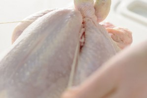
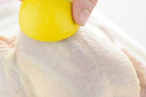
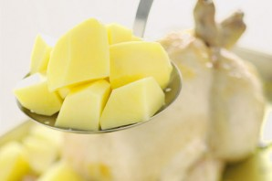
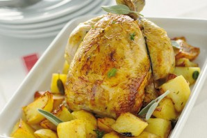

Описание приготовления:
Курица с картофелем в духовке - весьма простое, но все-таки праздничное блюдо, ведь целая птица в большом блюде на столе смотрится достаточно внушительно. Это блюдо хорошо подходит для семейного обеда - хозяин нарезает курицу на кусочки, накладывает всем членам семьи... :) В приготовлении курицы с картошкой в духовке есть кое-какие хитрости - и в этом рецепте с фото я ими поделюсь с вами. Желаю кулинарных успехов!
Состав / Ингредиенты:
- Курица целая — 1 Килограмм
- Картофель — 6-7 Штук
- Лимон — 1 Штука
- Чеснок — 2-3 Зубчиков
- Соль, черный перец — - По вкусу
- Растительное масло — 3-4 Ст. ложек
- Приправа к курице и травы — - По вкусу
- Бульон, вино или вода — 1/2-3/4 Стакана
Как приготовить "Курица с картофелем в духовке"
 1.Курицу промойте, просушите, если желаете, свяжите ножки кондитерским жгутом. Я это делаю крайне редко и это необязательно
 2. Курицу выложите в форму. Смажьте курицу лимонным соком, выдавите сок из лимона на курицу и в форму для запекания. Половинки лимона можно вложить внутрь курицы. Курицу смажьте солью, перцем, специями. Можно под кожу на грудке засунуть кусочки бекона.
 3. Пусть пока курица полежит помаринуется, а мы займемся картофелем. Почистите картошку, разрежьте на половинки или четвертинки (если картошка - большая), выложите в кастрюлю, залейте водой и посолите. Доведите до кипения и сразу слейте воду. Картошку выложите к курице.
 4. Сбрызните курицу и картошку в форме для запекания маслом, добавьте бульона, воды или вина, выложите травки. Отправляйте курицу в разогретую до 200 градусов духовку на 40 минут. Если верх станет слишком румяный, накройте его фольгой в процессе запекания. Если будет очень сухо, добавьте бульона или вина. Курица с картофелем в духовке будет готова, когда мясо слезет с косточки, а картофель станет мягким. Приятного аппетита!
Read now
Чат
- Привет
- Как дела?
- Список